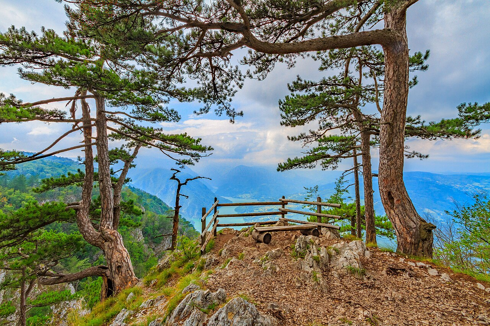

The Open Science Community Serbia (OSCS) was founded with the goal of promoting good Open Science practices and facilitating cooperation and knowledge exchange between researchers and librarians. The initiative to launch the OSCS was started in March 2021 and the founding meeting was held on November 2, 2021, at 11 AM, via Zoom.
The first Open Science Community (OSC) was founded in 2018 at Utrecht University; this initiative was later adopted by other institutions, both in the Netherlands and worldwide (source: https://inosc-starter-kit.netlify.app/docs/). More information about OSCS is available on the About OSCS page.

Author: Cedomir Zarkovic · CC BY-SA 4.0 · source